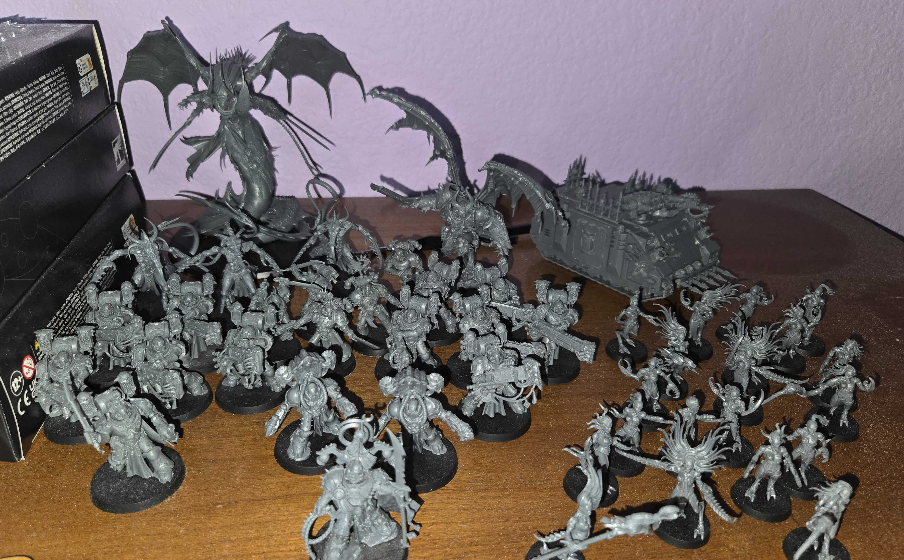

Recently, one of my friends convinced me to get into the world of Warhammer 40K, a decision my wallet sorely regrets. Since then, I have amassed an army of the Emperor's Children, one of the legions which betrayed mankind and fell to the forces of chaos.

The Emperor's Children was the only one of the original First Founding Legiones Astartes to bear the Emperor of Mankind's own name and icon granted to them by his hand as a symbol of the Legion's martial perfection. Few were ever so honoured amongst the ancient Space Marine Legions and given less cause to betray the Master of Mankind than the Emperor's Children. Given the plaudits and accolades accorded them, few could doubt that they were the embodiment of what the Emperor had intended the Legiones Astartes to be: noble in action and aspect, excelling in all matters, strong, civilised, firm of purpose and loyal to the core. From this height they descended in treachery to the lowest and vilest of creatures, enslaved to pride and consumed by hedonistic desires that no natural power could fulfill. The Emperor's Children are now a scattered Legion much like their counterparts the World Eaters, their unity devoured by their allegiance to Chaos. The Emperor's Children Legion now exists only as scattered, autonomous warbands of Heretic Astartes located in the Eye of Terror who are dedicated to their own pursuit of corrupt, hedonistic and usually murderous pleasures. The Chaos Space Marines of the Emperor's Children are known for possessing outlandish mutations and surgical alterations as "gifts" from their new god, Slaanesh, which are designed to make them more "perfect" in the eyes of their twisted patron. The Heretic Astartes of the Emperor's Children Legion possess no other purpose but to exceed every extreme and to know every possible sensation. Its warriors are entirely in the thrall of Slaanesh, the Dark Prince of Chaos, but once, the Legion of the primarch Fulgrim strived for perfection in all they did, and were counted as one of the most dedicated of all of the Emperor's followers. Though the Emperor's Children were present at the siege of the homeworld of Mankind, they were not numbered amongst the formations that assaulted the mighty fortifications erected by the Praetorian of Terra Rogal Dorn, primarch of the Imperial Fists Legion, to defend the Imperial Palace. While the World Eaters and other Traitor Legions launched assault after assault upon the palace, the Emperor's Children are said to have laid waste to the surrounding city and other outlying regions of the Throneworld, slaughtering untold thousands, perhaps even millions, of the Emperor's subjects in an orgy of unfettered cruelty. Some have even suggested that the Emperor's Children were using the unprecedented violence of the Siege of Terra to slay sufficient victims to render their vital fluids into some abominable distillation, a stimulant that would grant them access to previously unheard-of heights of sensation. In the end, the Siege of Terra was lifted when the Emperor slew the Arch-traitor Horus, and the Emperor's Children were driven from Terra along with the rest of the Traitors. Leaving a trail of desecrated worlds and violated populations, the Emperor's Children joined the ranks of those Traitor Legions taking refuge from the Imperium's wrath within the Eye of Terror, beginning a new and devastating series of wars against their erstwhile allies among the forces of Chaos in search of stolen mortal slaves to serve as their playthings. The history of the Emperor's Children in the period that followed the defeat of the Traitor Legions at the Siege of Terra is largely obscured from Imperial scholars, for obvious reasons. Perhaps the greatest mystery surrounds the fate of Primarch Fulgrim himself, for it appears that he disappeared entirely. Some say that the Prince of Chaos had already granted him apotheosis in the course of the Horus Heresy, and he assumed the mantle of a Daemon Primarch. There are those that claim that Fulgrim has retreated to some Daemon World of his own creation, and rules there still, overseeing such debased extremes of sensation and experience as no mortal can imagine. Some of those who revere Slaanesh regard this mythical place as the holy of holies, and spend entire lifetimes obsessively questing after it.